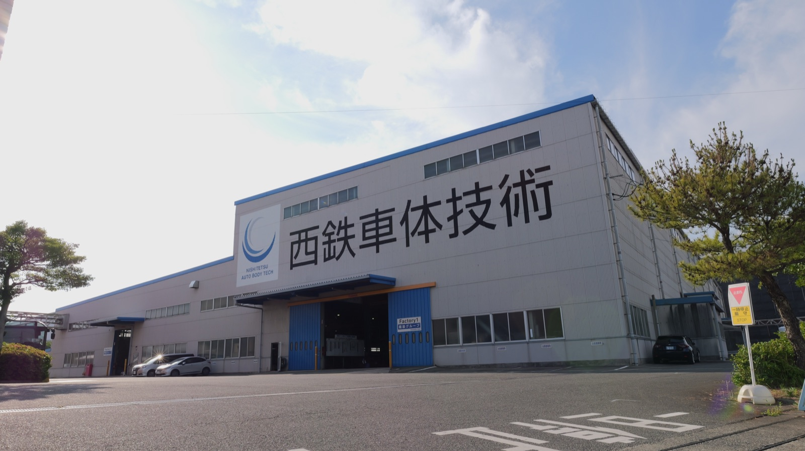
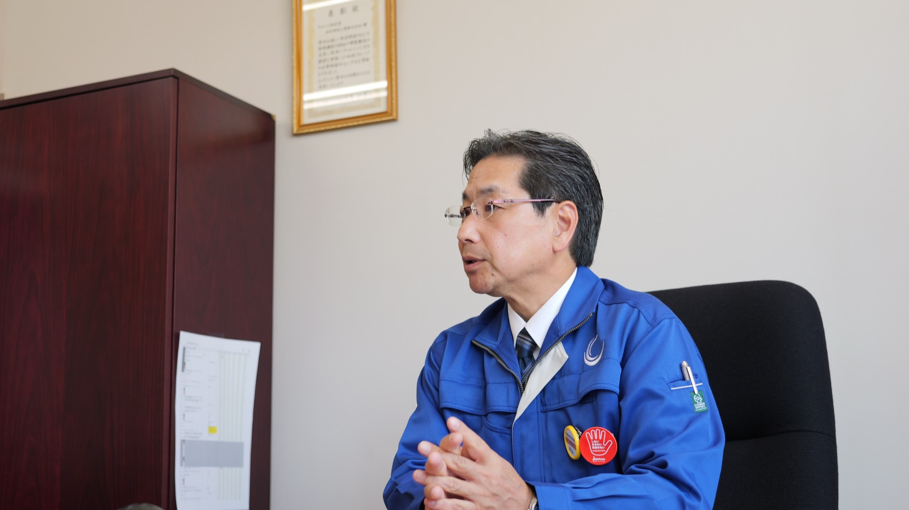
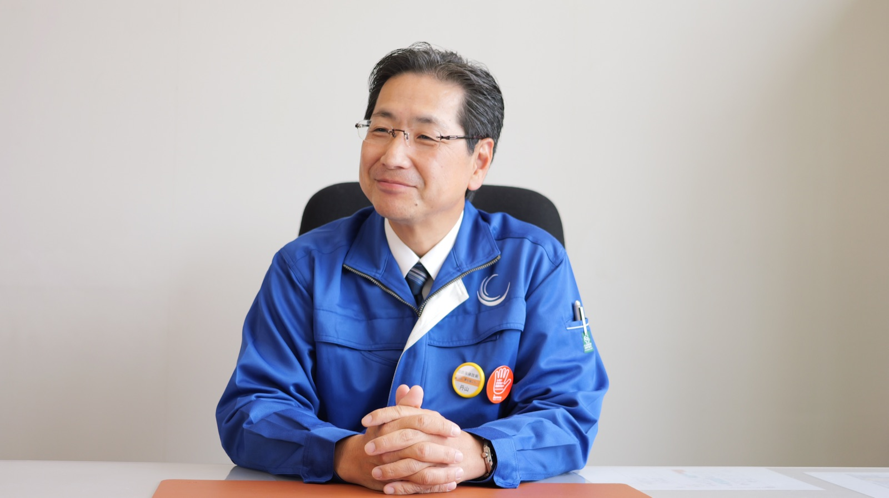
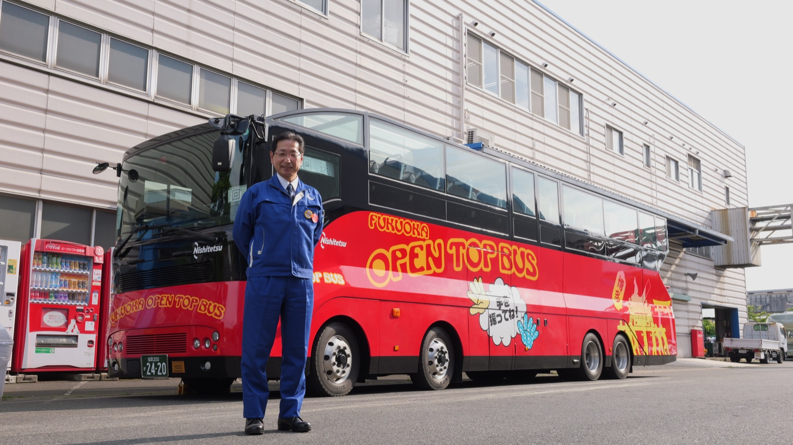

九州随一の技術力を誇る車体修理・改造会社
会社設立の源流は戦後まもなく誕生したバスメーカーの西日本車体工業株式会社、修理専門の共栄車体工業、さらには戦時中に幻の戦闘機と言われたあの「震電」を手がけた九州飛行機株式会社にまでさかのぼる。
それぞれの会社のDNAが複雑に絡み合った結果生み出されたのは、ライオンの牙を受け止める特殊鋼の格子や強度計算を隅々まで行き届かせて造られた、まさに動く檻といえるジャングルバスや様々な顧客の要求に柔軟に対応するフルオーダーメイドの豪華バスなど多岐に亘る。

石の上にも三年。目の前の仕事に必死にしがみつくうち、整備する楽しさや、改良・改善していくことにやりがいを感じていった。
設計部門を抱えている強み
同社最大の武器は、改造会社としては珍しい「設計部門」を抱えている点だ。現場と設計が密接に連携し、現物合わせで生まれるアイデアを即座に図面化できる。
顧客は行政機関や交通事業者が主体だが、近年は観光・物流・医療まで裾野が広がる。丹山は“提案型改造”と呼び、単なる修理ではなく顧客のニーズを捉え、より付加価値を高めた車両を提案する。「お客様からの『こんな車は作れないか』という声に、図面ひとつで『こういう提案はいかがでしょう』と応える。まさに顧客と共に価値を創る瞬間です」と丹山は語る。

全員が気持ちよく働ける環境をつくるために
彼がもっとも時間を割くのは「従業員が気持ちよく働ける環境づくり」だ。就任早々、従業員の方々へ「働き方改革を進め、風通しが良い職場をつくっていこう」と熱く語った丹山は、社長と従業員との距離感をより縮めるために、飲みニケーションや社内イベントの再活性化も進めつつある。
意見交換の場を設けることで、社長と技術者が技術やアイデアを包み隠さず語り合える風土をつくり出し、まさに「技術者の声が会社を動かす」循環を目指している。

続けることで才能を越えられる
「迷いがあるなら、一旦続けてみることです。私も正直、これでいいのかと迷うことが多くありました。ただ、それでも継続していくことで、なにか変化が起こり見える景色も変わって見えていく瞬間がある。それは、自分の持っている力量や能力が進化した瞬間ではないかと、そう思うのです」
彼の眼差しに映っていたのは、昭和初期から受け継がれた技術者としての魂だった。
